音樂 × 程式 ×
課堂實驗室
Music Teacher / EdTech Game Maker
我是 Dato，國小音樂教師。用互動遊戲和雙語教學讓孩子玩音樂：奧福節奏、直笛闖關、自己寫的課堂小遊戲。
Elementary music teacher building games that make music learning fun — Orff rhythm, recorder challenges, and classroom web games I code myself.
會寫程式的音樂老師
The music teacher who ships code.
音樂是人類共通的語言。我從小念音樂班，現在在國小教音樂，白天上課、放學寫程式——把課堂上「小孩卡住的地方」變成一個個網頁小遊戲：用直笛吹奏來切水果、拍打節奏闖關、電報解密聽音訓練。
Music is the universal language of mankind. By day I teach elementary music; by night I turn classroom pain points into web games — fruit-slicing triggered by recorder notes, rhythm battles, and telegraph decoding for ear training.
所有遊戲與教學影片開放教師與家長免費在課堂使用。如果你用了，歡迎告訴我孩子們的反應——那是我持續開發最大的動力。
// SPEC SHEET 規格表
教室裡直接開的遊戲
瀏覽器打開就能玩，平板、手機、電子白板都相容。All 9 games playable in the browser — built for classrooms.
直笛水果忍者
WIND-BLADE吹對音高就能切水果！訓練直笛音準、氣息穩定，內建長音機制、Fever 連擊與調音輔助介面。
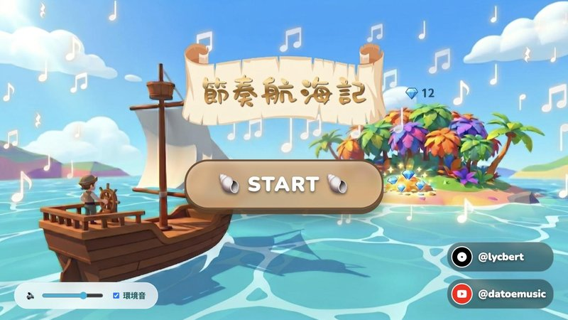
▶ PLAY節奏海洋
RHYTHM OCEAN課堂節奏拍打測驗遊戲。老師出題、全班應戰，把 Ta、Ti-ti 的節奏練習變成海洋大冒險。
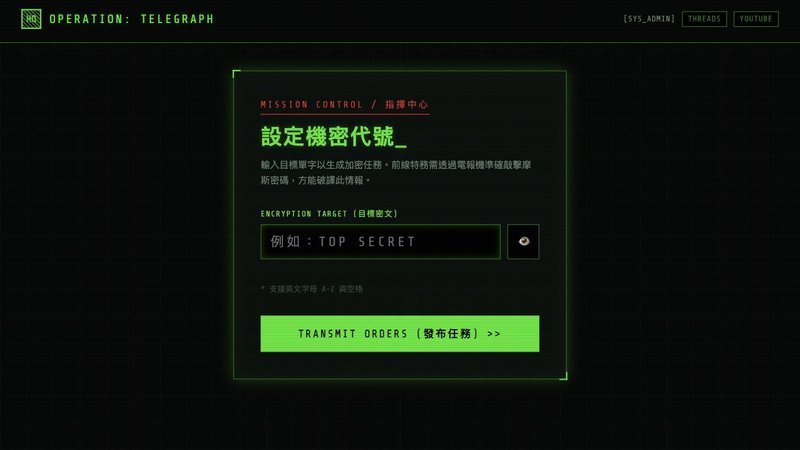
▶ PLAY諜報電報
ESPIONAGE TELEGRAPH化身情報員解密電報！在遊戲中體驗長短音訊號與聽力解碼，聽音訓練不知不覺完成。
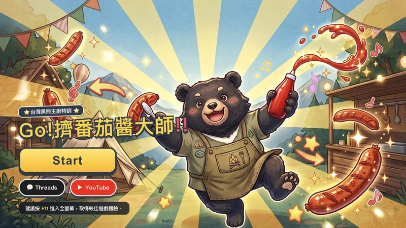
▶ PLAY番茄醬節奏大師
CATCHUPER第一拍準確出發、按住持續對齊長音！專為節奏聽覺與時值感知設計的網頁街機特訓遊戲。
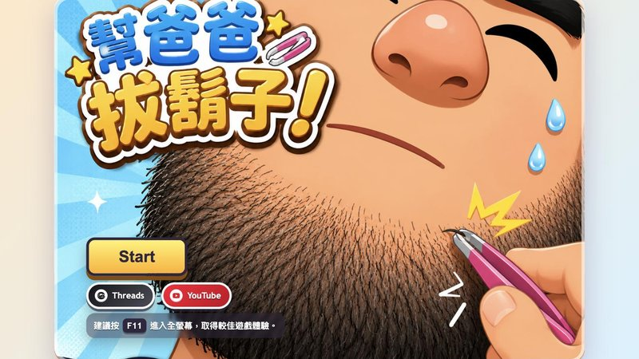
▶ PLAY節奏幫爸爸拔鬍子
DADABEARD看示範長鬍子，照節奏拔鬍子！聽節奏、抓拍點，練耳朵也練反應。
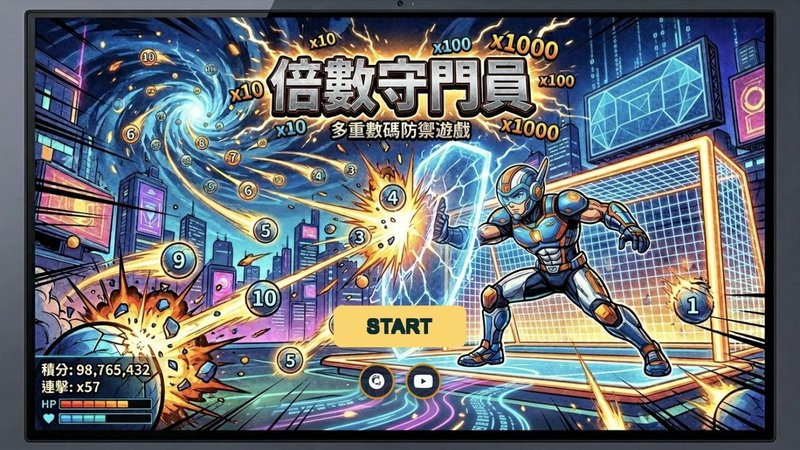
▶ PLAY倍數守門員
TIMESMATH舉手當守門員，接住指定倍數、躲開其他球！鏡頭體感 + 心算反應的跨科遊戲。
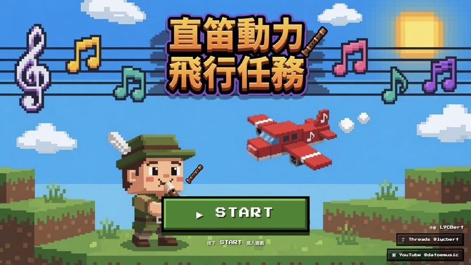
▶ PLAY直笛動力飛行任務
RECORDERPLANE吹 Sol La Si Do 操控飛機在五線譜上飛行，3 關 30 題，邊玩邊練音高辨識。
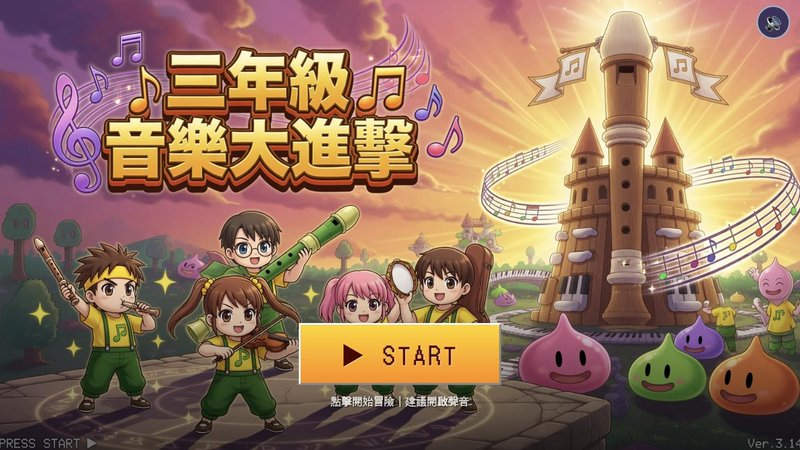
▶ PLAY三年級音樂大進擊
MUSIC3GRADERPG 風格期末複習：5 大地圖、18 道題目、道具系統，把考試變成一場冒險。
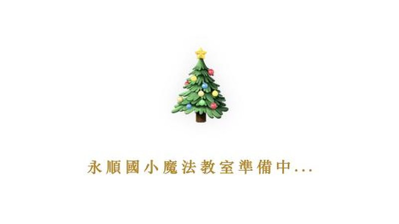
▶ PLAY魔法聖誕樹
XMAS MISSION永順國小 2025 聖誕限定任務頁，節慶活動的沉浸式互動教室。
給用 MuseScore 備課的音樂老師，開源免費。Free open-source plugins for MuseScore.
追蹤我的實驗室
教學影片、開發日誌、原始碼與教學筆記，各在它們該在的地方。
頻道裡的五個系列
每個系列都是一種課堂遊戲玩法，點縮圖直接到 YouTube 播放清單。5 running series on the channel — click a thumbnail to open the full playlist.
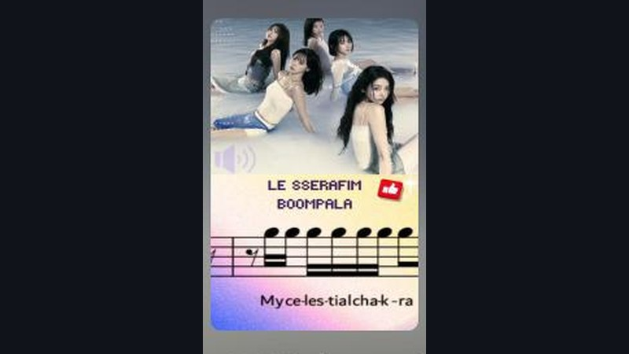
▶ WATCHKpop 旋律鋼琴貼紙
KPOP HIGHLIGHT MELODY SHEET MUSIC把當紅 K-pop 副歌變成鋼琴 A/B/C 音名貼紙，邊聽神曲邊練認譜。目前 15 部影片，更新最勤的系列。
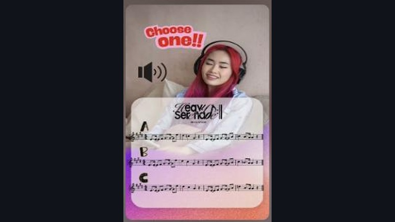
▶ WATCH找出真正的旋律
CAN YOU SPOT THE REAL ONE?同一句歌詞配上真假兩種旋律線，考驗孩子的聽力辨識力，AB 兩版你選得出來嗎？
拍手說節奏
CLAP AND SAY IT!1 分鐘奧福節奏挑戰，拍手、開口、跟著做。從入門慢速版到十六分音符進階版，循序漸進。
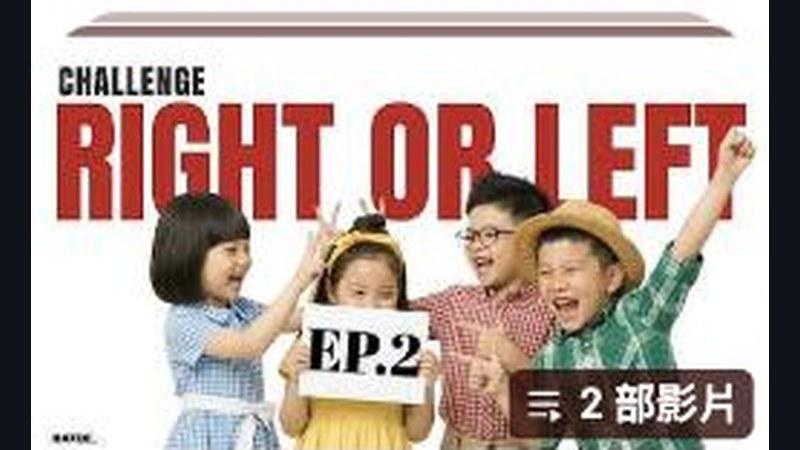
▶ WATCH左右挑戰遊戲
RIGHT OR LEFT邊聽音樂邊分辨左右手，訓練大腦與肢體協調的節奏遊戲，適合課堂律動暖身。
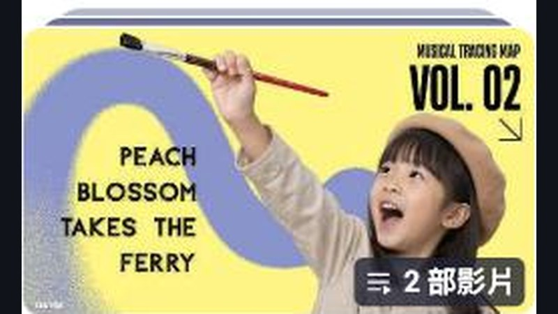
▶ WATCH音樂路線地圖
MUSICAL TRACING MAP跟著旋律線描繪地圖路線，把聽音與視覺路徑結合的最新實驗系列。
看全部影片
36+ VIDEOS ON YOUTUBE訂閱頻道追蹤最新上傳，所有 1 分鐘節奏挑戰、直笛教學都在這裡。
怎麼讓孩子玩音樂
How the lab runs: play first, theory later.
先玩再說 Play First
奧福（Orff）取向：從身體打擊、遊戲與律動出發，孩子先「做到」音樂，再認識音樂。
雙語滲透 CLIL
音樂課同時是語言課。Ta、Ti-ti 的節奏語言配上英語指令，雙語自然發生。
科技補位 Tech Assist
孩子卡住的地方，就是下一個遊戲的規格書。用即時回饋讓每個孩子都有自己的練習節奏。
課堂用了我的遊戲嗎？
歡迎分享孩子們的實作反應、提供開發回饋，或洽談教學合作與授權。
Teachers & parents: free for classroom use. For business inquiries, drop me a line.